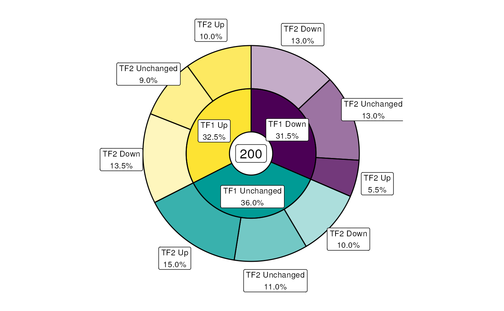

Create Donut charts based on one or two columns in a data frame
plotSplitDonut(object, ...)
# S4 method for GRanges
plotSplitDonut(object, scale_by = c("n", "width"), ...)
# S4 method for DataFrame
plotSplitDonut(object, ...)
# S4 method for data.frame
plotSplitDonut(
object,
inner,
outer,
scale_by = NULL,
scale_factor = 1000,
r_centre = 0.5,
r_inner = 1,
r_outer = 1,
total_glue = "{comma(N)}",
total_size = 5,
total_colour = "black",
inner_glue = "{inner} {.data[[inner]]}\n{percent(p,0.1)}",
outer_glue = "{outer} {.data[[outer]]}\n{percent(p,0.1)}",
total_label = c("label", "text", "none"),
inner_label = c("label", "text", "none"),
outer_label = c("label", "text", "none"),
label_alpha = 1,
inner_label_alpha = NULL,
outer_label_alpha = NULL,
label_size = 3,
inner_label_size = NULL,
outer_label_size = NULL,
label_colour = "black",
inner_label_colour = NULL,
outer_label_colour = NULL,
min_p = 0.05,
inner_min_p = NULL,
outer_min_p = NULL,
max_p = 1,
inner_max_p = NULL,
outer_max_p = NULL,
explode_inner = NULL,
explode_outer = NULL,
explode_query = c("AND", "OR"),
explode_x = 0,
explode_y = 0,
explode_r = 0,
nudge_r = 0.5,
expand = 0.1,
inner_palette = NULL,
outer_palette = NULL,
inner_legend = TRUE,
outer_legend = TRUE,
layout = c(main = area(1, 1, 6, 6), lg1 = area(2, 7), lg2 = area(4, 7)),
...
)A GRanges or data.frame-like object
Not used
Column to scale values by. If provided, values in this column will be summed, instead of simply counting entries. Any label in the centre of the plot will also reflect this difference
Column name to create the inner ring
Column name to create the outer ring, subset by the inner ring
When scaling by another column, such as width, totals will be divided by this value, with 1000 being the default to provide output in kb.
The radius of the hole in the centre. Setting to zero will create a Pie chart
The radii of the inner/outer rings
glue-syntax for formatting the total which
appears in the centre of the plot. Internally, the value N will be
calculated and as such, this value should appear within this argument.
Label size total number of entries in the centre of the plot.
Label colour for the summary total in the centre
glue-syntax for formatting labels
which appear on each inner/outer segment Internally, the values n and p
will be calculated as totals and proportions of the total. As such, these
values can appear within this argument, as well as the fields described in
the details
Can take values 'text', 'label'
or 'none'. If setting one the first two values, the labelling function
geom_* will be called, otherwise no label will be drawn
transparency for labels
Size of all text labels
Takes any colour specification, with the additional option of 'palette'. In this special case, the same palette as is used for each segment will be applied.
only display labels for segments
representing greater than this proportion of the total. If inner/outer values
are specified, the values in min_p will be ignored for that layer
only display labels for segments
representing less than this proportion of the total. If inner/outer values
are specified, the values in max_p will be ignored for that layer
Regular expressions from either the inner or outer ring for which segments will be 'exploded'
Setting to AND and specifying values for both the inner and outer ring will require matches in both categories
Numeric values for shifting exploded values
Radius expansion for exploded values
Radius expansion for labels in the outer ring
Passed to expansion for both x and y axes
Colour palette for the inner ring
Optional colour palette for the outer ring
logical(1). Show legends for either layer
Passed to plot_layout
A patchwork object consisting of both ggplot2 objects and legend grobs
Using a data.frame or GRanges object, this function enables creation of a Pie/Donut chart with an inner and outer ring. The function itself is extremely flexible allowing for separate colour palettes in the inner and outer rings, as well as highly customisable labels.
Sections can be exploded using a value from the inner ring or outer ring
separately, or in combination by setting explode_query = "AND".
Exploded sections can be shifted by expanding the radius (explode_r), or
along the x/y co-ordinates using explode_x/y, allowing for detailed
placement of sections.
If only the inner palette is specified, segments in the outer ring will be assigned the same colours as the inner segments, but with increased transparency. Only a single legend will be drawn in this scenario. If an outer palette is specified, both colour palettes are completely distinct and two distinct legends will be drawn. The placement of these legends, along with the larger donut plot, can be manually specified by providing a layout as defined in plot_layout. Names are not required on this layout, but may be beneficial for code reproducibility.
The inner label denoting the total can also be heavily customised using the
glue syntax to present the calculated value N along with any
additional text, such as 'kb' if scaling GenomicRanges by width. The same
approach can be taken for the inner and outer labels, where totals are
held in the value n, proportions are held in the value p and the values
corresponding to each segment can be accessed using .data[[inner]] or
.data[[outer]]. Column titles can be added using {inner}/{outer}.
Values from the inner segments can be added to the outer
labels using this strategy enabling a wide variety of labelling approaches
to be utilised.
set.seed(200)
df <- data.frame(
feature = sample(
c("Promoter", "Enhancer", "Intergenic"), 200, replace = TRUE
),
TF1 = sample(c("Up", "Down", "Unchanged"), 200, replace = TRUE),
TF2 = sample(c("Up", "Down", "Unchanged"), 200, replace = TRUE)
)
## The standard plot
plotSplitDonut(df, inner = "TF1", outer = "TF2", inner_legend = FALSE)

## Adding an exploded section along with an outer palette & customisation
plotSplitDonut(
df, inner = "TF1", outer = "feature", total_label = "none",
inner_label_alpha = 0.5, r_centre = 0,
outer_glue = "{.data[[outer]]}\n(n = {n})", outer_label = "text",
explode_inner = "Up", explode_outer = "Prom|Enh",
explode_query = "AND", explode_r = 0.4,
inner_palette = hcl.colors(3, "Spectral", rev = TRUE),
outer_palette = hcl.colors(3, "Cividis")
)